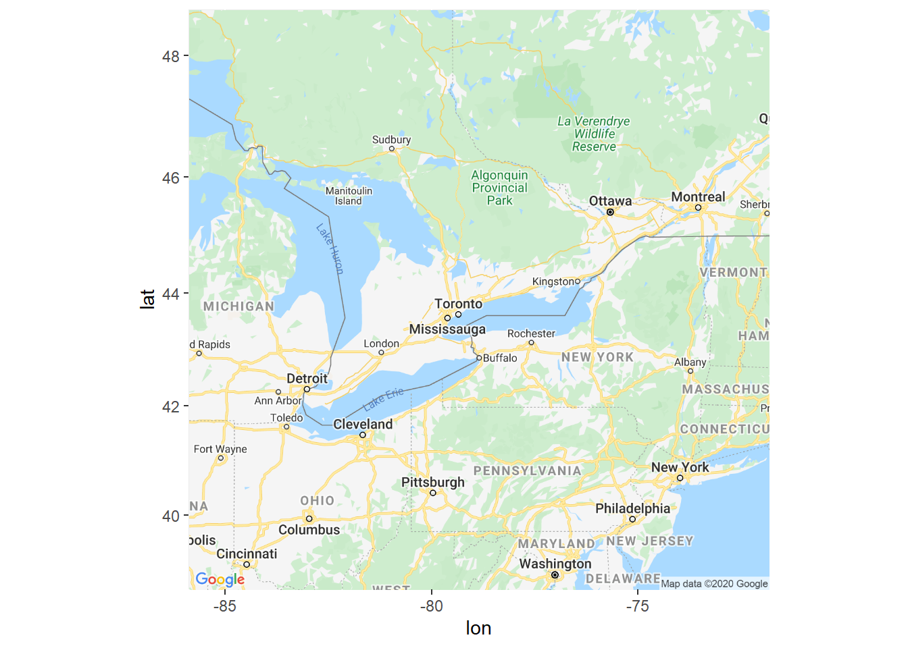

Ontario Map
Chris Papalia
5/1/2020
library(tidyverse)
library(maps)##
## Attaching package: 'maps'## The following object is masked from 'package:purrr':
##
## maplibrary(sf)## Linking to GEOS 3.6.1, GDAL 2.2.3, PROJ 4.9.3library(mapproj)
library(rnaturalearth)
library(rnaturalearthdata)
library(ggmap)## Google's Terms of Service: https://cloud.google.com/maps-platform/terms/.## Please cite ggmap if you use it! See citation("ggmap") for details.library(OpenStreetMap)
library(ggrepel)ont_cases <- read_csv("ontario_covid_cases.csv")## Parsed with column specification:
## cols(
## `_id` = col_double(),
## Row_ID = col_double(),
## Accurate_Episode_Date = col_datetime(format = ""),
## Age_Group = col_character(),
## Client_Gender = col_character(),
## Case_AcquisitionInfo = col_character(),
## Outcome1 = col_character(),
## Reporting_PHU = col_character(),
## Reporting_PHU_Address = col_character(),
## Reporting_PHU_City = col_character(),
## Reporting_PHU_Postal_Code = col_character(),
## Reporting_PHU_Website = col_character(),
## Reporting_PHU_Latitude = col_double(),
## Reporting_PHU_Longitude = col_double()
## )ont_cases %>%
glimpse()## Observations: 16,608
## Variables: 14
## $ `_id` <dbl> 1, 2, 3, 4, 5, 6, 7, 8, 9, 10, 11, 12, 13...
## $ Row_ID <dbl> 1, 2, 3, 4, 5, 6, 7, 8, 9, 10, 11, 12, 13...
## $ Accurate_Episode_Date <dttm> 2020-01-22, 2020-01-21, 2020-01-24, 2020...
## $ Age_Group <chr> "50s", "50s", "20s", "20s", "60s", "60s",...
## $ Client_Gender <chr> "FEMALE", "MALE", "FEMALE", "FEMALE", "FE...
## $ Case_AcquisitionInfo <chr> "Travel-Related", "Travel-Related", "Trav...
## $ Outcome1 <chr> "Resolved", "Resolved", "Resolved", "Reso...
## $ Reporting_PHU <chr> "Toronto Public Health", "Toronto Public ...
## $ Reporting_PHU_Address <chr> "277 Victoria Street, 5th Floor", "277 Vi...
## $ Reporting_PHU_City <chr> "Toronto", "Toronto", "London", "Toronto"...
## $ Reporting_PHU_Postal_Code <chr> "M5B 1W2", "M5B 1W2", "N6A 5L7", "M5B 1W2...
## $ Reporting_PHU_Website <chr> "www.toronto.ca/community-people/health-w...
## $ Reporting_PHU_Latitude <dbl> 43.65659, 43.65659, 42.98147, 43.65659, 4...
## $ Reporting_PHU_Longitude <dbl> -79.37936, -79.37936, -81.25402, -79.3793...ont_cases <-
ont_cases %>%
mutate_at(vars(Age_Group, Client_Gender, Reporting_PHU, Case_AcquisitionInfo, Outcome1), as.factor)ont_cases<-
ont_cases %>%
mutate(Age_Group = fct_recode(Age_Group,
"0-20" = "<20",
"20-29" = "20s",
"30-39" = "30s",
"40-49" = "40s",
"50-59" = "50s",
"60-69" = "60s",
"70-79" = "70s",
"80-89" = "80s",
"90-99" = "90s",
"NA" = "Unknown"
)) ont_cases <-
ont_cases %>%
filter(Age_Group != "NA")ont_cases <-
ont_cases %>%
mutate(lat = Reporting_PHU_Latitude,
long = Reporting_PHU_Longitude)ont_cases %>%
group_by(Age_Group) %>%
summarise(n = n()) %>%
ggplot(aes(x = Age_Group, y = n))+
geom_col(fill = "blue")ont_cases %>%
ggplot(aes(x = Age_Group, fill = Client_Gender))+
geom_bar(position = "dodge")ont_cases_loc <-
ont_cases %>%
group_by(Reporting_PHU) %>%
summarise(cases = n(),
long = mean(long),
lat = mean(lat))ont_cases_loc %>%
ggplot(aes(x = long, y = lat, size = cases))+
geom_point()+
coord_map()+
borders(database = "world", regions = "canada")Canada <- ne_countries(country = "Canada")ggplot()+
geom_point(data = ont_cases_loc, aes(x = long, y = lat, size = cases))+
geom_sf()Google Maps Etc
Need to register API Key
ggmap(get_map("Sudbury, ON", zoom = 6, maptype = "roadmap"))## Source : https://maps.googleapis.com/maps/api/staticmap?center=Sudbury,%20ON&zoom=6&size=640x640&scale=2&maptype=roadmap&language=en-EN&key=xxx-bvjGzd19c1eRdw## Source : https://maps.googleapis.com/maps/api/geocode/json?address=Sudbury,+ON&key=xxx-bvjGzd19c1eRdwggmap(get_map("Oshawa, ON", zoom = 6, maptype = "roadmap"))## Source : https://maps.googleapis.com/maps/api/staticmap?center=Oshawa,%20ON&zoom=6&size=640x640&scale=2&maptype=roadmap&language=en-EN&key=xxx-bvjGzd19c1eRdw## Source : https://maps.googleapis.com/maps/api/geocode/json?address=Oshawa,+ON&key=xxx-bvjGzd19c1eRdw
Open Street Map
Ontario_test = openmap(c(46, -85), c(42, -75), type = "esri-topo")autoplot(Ontario_test)
Scale the long and lat coordinates of Ontario Cases
lat_lon_convert <- as.data.frame(projectMercator(ont_cases_loc$lat, ont_cases_loc$long))lat_lon_convert %>%
mutate(lat = x,
lon = y,
health_unit = ont_cases_loc$Reporting_PHU,
cases = ont_cases_loc$cases) -> open_map_plotopen_map_plot %>%
filter(lon < 5800000) %>%
filter(lat < -8400000)-> open_map_plot_1ont_cases_loc %>%
arrange(desc(lat))## # A tibble: 34 x 4
## Reporting_PHU cases long lat
## <fct> <int> <dbl> <dbl>
## 1 Northwestern Health Unit 15 -94.5 49.8
## 2 Porcupine Health Unit 59 -81.3 48.5
## 3 Thunder Bay District Health Unit 74 -89.3 48.4
## 4 Timiskaming Health Unit 18 -79.7 47.5
## 5 Algoma Public Health Unit 13 -84.3 46.5
## 6 Sudbury & District Health Unit 57 -81.0 46.5
## 7 North Bay Parry Sound District Health Unit 14 -79.5 46.3
## 8 Renfrew County and District Health Unit 16 -77.1 45.8
## 9 Ottawa Public Health 1372 -75.8 45.3
## 10 Eastern Ontario Health Unit 92 -74.7 45.0
## # ... with 24 more rowsautoplot(Ontario_test)+
geom_point(data = open_map_plot_1, aes(x = lat, y = lon, size = cases, colour = health_unit), alpha = .8)+
scale_x_continuous(breaks = NULL)+
scale_y_continuous(breaks = NULL)+
scale_color_discrete(guide = FALSE )+
scale_size(name = "Cases", breaks = c(100, 500, 1000, 5000), range = c(1, 10))+
labs(x = "", y = "")+
#geom_text_repel(data = open_map_plot_1, aes(x = lat, y = lon, label = health_unit), size = 2)+
theme_minimal()## Scale for 'x' is already present. Adding another scale for 'x', which will
## replace the existing scale.## Scale for 'y' is already present. Adding another scale for 'y', which will
## replace the existing scale.Trials <- openmap(c(46, -85), c(42, -75), type = "esri-topo")
autoplot(Trials)